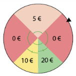

Somme de variables aléatoires
1 Somme de variables aléatoires
1.1 Définitions
Soient X et Y deux variables aléatoires définies sur l’univers \Omega. Soit a un réel.
On définit une variable aléatoire Z telle que, pour tout élément \omega \in \Omega, Z(\omega)=aX(\omega). On note Z=aX.
On définit une variable aléatoire S telle que, pour tout élément \omega \in \Omega, S(\omega)=X(\omega)+Y(\omega). On note S=X+Y.
On peut définir de la même façon la somme de n variables aléatoires (n \in \mathbb{N}^*).
On peut définir de la même façon la variable aléatoire X-Y.
Un jeu consiste à lancer un dé équilibré numéroté de 1 à 6. Le nombre de points obtenus est le résultat du dé multiplié par 5.
On note X et Y les variables aléatoires correspondant au résultat du dé et aux points obtenus.
Déterminer la loi de probabilité de Y.
Ainsi, Y=5X.
La variable Y prend ses valeurs dans l’ensemble \{5;10;15;20;25;30\} et sa loi de probabilité est :
| y | 5 | 10 | 15 | 20 | 25 | 30 |
|---|---|---|---|---|---|---|
| P(\{Y=y\}) | \frac{1}{6} | \frac{1}{6} | \frac{1}{6} | \frac{1}{6} | \frac{1}{6} | \frac{1}{6} |
On lance un dé jaune équilibré à 4 faces et un dé vert équilibré à 6 faces.
On note J et V les variables aléatoires correspondant au résultat du dé jaune et du dé vert.
La variable aléatoire S=J+V est la variable donnant la somme des résultats des deux dés.
Donner la loi de probabilité de la variable aléatoire S.
On peut dresser un tableau à double entrée pour lister toutes les sommes possibles.
| J \backslash V | 1 | 2 | 3 | 4 | 5 | 6 |
|---|---|---|---|---|---|---|
| 1 | 2 | 3 | 4 | 5 | 6 | 7 |
| 2 | 3 | 4 | 5 | 6 | 7 | 8 |
| 3 | 4 | 5 | 6 | 7 | 8 | 9 |
| 4 | 5 | 6 | 7 | 8 | 9 | 10 |
La variable aléatoire S prend les valeurs de l’ensemble \llbracket 2;10\rrbracket et sa loi de probabilité est donnée par :
| s | 2 | 3 | 4 | 5 | 6 | 7 | 8 | 9 | 10 |
|---|---|---|---|---|---|---|---|---|---|
| P(\{S=s\}) | \frac{1}{24} | \frac{1}{12} | \frac{1}{8} | \frac{1}{6} | \frac{1}{6} | \frac{1}{6} | \frac{1}{8} | \frac{1}{12} | \frac{1}{24} |
1.2 Espérance d’une somme de variables aléatoires
Dans cette partie, on considère une variable aléatoire X définie sur \Omega=\lbrace \omega_1;\omega_2; ... ;\omega_n \rbrace et on note \lbrace x_1; x_2;...; x_p\rbrace l’ensemble des valeurs prises par X où n et p sont des entiers naturels non nuls.
(admise)
E(X)=\sum \limits_{i=1}^n X(\omega_i)P(\lbrace \omega_i \rbrace)
Dans le cadre d’un lancer de dé cubique équilibré, on gagne 2 si on obtient un nombre pair et on perd 6 si on obtient un nombre impair. On note X la variable aléatoire correspondant au gain remporté. Calculer l’espérance de X.
L’espérance de la variable aléatoire X correspondant au gain remporté s’élève à : E(X) = (-6)\times \dfrac{1}{6} + ... + 2 \times \dfrac{1}{6} = -2 \text{ €}
Soient X et Y deux variables aléatoires définies sur le même univers \Omega. Soit a un réel. Alors :
E(X+Y)=E(X)+E(Y)
E(aX)=aE(X)
Soient X, Y et Z trois variables aléatoires définies sur \Omega telles que Z=X+Y.
On a alors E(X+Y)=E(Z)=\sum \limits_{i=1}^n Z(\omega_i)P(\lbrace \omega_i \rbrace) = \sum \limits_{i=1}^n (X+Y)(\omega_i)P(\lbrace \omega_i \rbrace).
Or, (X+Y)(\omega_i)=X(\omega_i) + Y(\omega_i).
Donc E(X+Y)=\sum \limits_{i=1}^n X(\omega_i)P(\lbrace \omega_i \rbrace) + \sum \limits_{i=1}^n Y(\omega_i)P(\lbrace \omega_i \rbrace).
D’où E(X+Y)=E(X)+E(Y) en identifiant les deux sommes précédentes à E(X) et E(Y).
Pour a=0 la propriété est évidente.
Considérons maintenant a \neq 0.En notant x_1; ... x_n, les valeurs prises par X, alors aX prend les valeurs ax_1; ... ax_n.
Par définition E(aX) = \sum \limits_{i=1}^n ax_iP(aX=ax_i).
Or aX=ax_i si, et seulement si, X=x_i donc P(aX=ax_i)=P(X=x_i).
Ainsi, E(aX) = \sum \limits_{i=1}^n ax_iP(X=x_i) = a \times \sum \limits_{i=1}^n x_iP(X=x_i) = aE(X)
Le premier point de cette propriété permet de déterminer l’espérance de X+Y simplement à l’aide de celles de X et Y (donc sans la connaissance de la loi de probabilité de X+Y).
On a également E(X-Y)=E(X)-E(Y).
Dans une fête foraine, un jeu de hasard se déroule en deux temps.
Le joueur fait d’abord tourner la roue ci-dessous et gagne le montant indiqué dans le secteur obtenu. Puis, il pioche un jeton bonus dans un sac qui contient 25 jetons marqués 0 euros, 20 jetons marqués 2 euros et 5 jetons marqués 5 euros.

Définir deux variables aléatoires X et Y telles que Z=X+Y.
Calculer l’espérance de X et celle de Y.
En déduire l’espérance de Z. Interpréter.
X est la variable aléatoire correspondant au gain obtenu avec la roue.
La loi de probabilité de X est :x_i 0 5 10 20 P(X=x_i) \frac{1}{2} \frac{1}{4} \frac{1}{8} \frac{1}{8} Y est la variable aléatoire correspondant au gain obtenu avec le jeton.
La loi de probabilité de Y est :y_i 0 2 5 P(Y=y_i) \frac{1}{2} \frac{2}{5} \frac{1}{10} E(X)=0 \times \frac{1}{2} + 5 \times \frac{1}{4}+10 \times \frac{1}{8} + 20 \times \frac{1}{8} = 5
E(Y)=0 \times \frac{1}{2} + 2 \times \frac{2}{5}+ 5 \times \frac{1}{10}=1{,}3E(Z)=E(X+Y)=E(X)+E(Y)=5+1{,}3=6{,}3
Sur un grand nombre de joueurs, le gain moyen par joueur est de 6{,}30 euros.
1.3 Variance
V(X) = \sum \limits_{i=1}^n (x_i-E(X))^2 P(X=x_i).
Soient X_1, X_2, ... , X_n, n variables aléatoires à valeurs respectivement dans E_1, ...E_n.
On dit que X_1, X_2, ... , X_n sont indépendantes lorsque, pour tous x_1 \in E_1, ..., x_n \in E_n : P(X_1=x_1 \cap X_2=x_2 \cap ... \cap X_n=x_n) = P(X_1=x_1) \times P(X_2=x_2) \times ... \times P(X_n=x_n)
De manière intuitive, deux variables aléatoires sont indépendantes si les résultats de l’une n’ont pas d’influence sur les résultats de l’autre.
Soient X et Y deux variables aléatoires définies sur un même univers fini \Omega. Soit a\in \mathbb{R}. Alors :
V(X+Y)=V(X)+V(Y) si X et Y sont deux variables aléatoires indépendantes
V(aX)=a^2V(X)
\sigma(aX)=|a|\sigma(X)
Ce premier point est admis.
Si a=0, la propriété est évidente.
On suppose que a\neq 0.En notant x_1;...x_n les valeurs prises par X, alors aX prend les valeurs ax_1;...ax_n.
Par définition, V(aX) = \sum \limits_{i=1}^n (ax_i-E(aX))^2 P(aX=ax_i)
Donc V(aX) = \sum \limits_{i=1}^n a^2(x_i-E(X))^2 P(X=x_i)
Ainsi V(aX) = a^2\sum \limits_{i=1}^n (x_i-E(X))^2 P(X=x_i) = a^2V(X)
\sigma(aX)=\sqrt{V(aX)}=\sqrt{a^2V(X)}=|a|\sqrt{V(X)}=|a|\sigma(X).
On reprend l’exemple précédent. Calculer la variance de Z.
V(X)=(0-5)^2 \times \frac{1}{2} + (5-5)^2 \times \frac{1}{4}+(10-5)^2 \times \frac{1}{8} + (20-5)^2 \times \frac{1}{8} = 43{,}75
V(Y)=(0-1{,}3)^2 \times \frac{1}{2} + (2-1{,}3)^2 \times \frac{2}{5}+ (5-1{,}3)^2 \times \frac{1}{10}=2{,}41
Les variables aléatoires X et Y sont indépendantes.
V(Z)=V(X)+V(Y)=43{,}75+2{,}41=46{,}16
2 Applications
Dans cette partie, n désigne un entier naturel non nul et p désigne un nombre réel de l’intervalle [0;1].
2.1 Loi binomiale
Deux variables aléatoires sont dites identiquement distribuées lorsqu’elles ont la même loi de probabilité.
(admise)
Toute variable aléatoire suivant une loi binomiale peut s’écrire comme une somme de variables aléatoires de Bernoulli indépendantes et identiquement distribuées.
Si X suit une loi binomiale de paramètres n et p, alors :
E(X)=np
V(X)=np(1-p)
\sigma(X)=\displaystyle \sqrt{np(1-p)}
Soit X une variable aléatoire suivant la loi binomiale de paramètres n et p. Alors, il existe n variables aléatoires de Bernoulli indépendantes, de paramètre p, telles que X=X_1+...+X_n.
Ainsi, pour tout k \in \left\lbrace1;...;n \right\rbrace, E(X_k)=p et V(X_k)=p(1-p).
Or, E(X)=E(X_1+...+X_n)=E(X_1)+...+E(X_n)=p+...+p=np
Les variables aléatoires X_1, ... X_n étant indépendantes, par définition du schéma de Bernoulli, on a : V(X)=V(X_1)+...+V(X_n)=p(1-p)+...+p(1-p)=np(1-p)
\sigma(X)=\displaystyle \sqrt{V(X)} = \displaystyle \sqrt{np(1-p)}
On effectue 40 lancers d’une pièce équilibrée. Pour i \in \llbracket 1;40\rrbracket, X_i est la variable aléatoire donnant 1 si la pièce tombe sur Pile et 0 sinon au i-ième lancer.
Quelle est la loi suivie par X=X_1+X_2+...+X_{40} ?
À quoi correspond X concrètement ?
Déterminer E(X).
Les X_i étant toutes indépendantes et suivant une loi de Bernoulli de paramètre p=0{,}5, on peut en déduire que X suit la loi binomiale de paramètres n=40 et p=0{,}5.
X est la variable aléatoire donnant le nombre de Pile obtenus à l’issue des 40 lancers.
E(X)=40 \times 0{,}5=20.
2.2 Échantillons de n variables aléatoires indépendantes et identiquement distribuées
On considère un entier naturel n non nul et X_1, ... X_n, n variables aléatoires définies sur \Omega supposées indépendantes et identiquement distribuées.
On note S_n=X_1+... + X_n la somme de ces n variables aléatoires et M_n=\dfrac{X_1+...+X_n}{n} la moyenne de ces n variables aléatoires.
Pour tout k \in \left\lbrace 1;...;n \right\rbrace, on a :
E(S_n)=nE(X_k)
V(S_n)=nV(X_k)
\sigma(S_n)=\displaystyle \sqrt{n}\sigma(X_k)
La linéarité de l’espérance donne E(S_n)=E(X_1)+...+E(X_n).
Or ces variables aléatoires suivent la même loi. Elles ont donc la même espérance.
D’où, pour tout k \in\lbrace 1;...;n \rbrace, E(S_n)=nE(X_k)De la même manière, les variables aléatoires X_1, ... X_n étant indépendantes, on a, pour tout k \in\lbrace 1;...;n \rbrace, V(S_n)=V(X_1)+...+V(X_n) = nV(X_k)
\sigma(S_n)=\displaystyle\sqrt{V(S_n)} = \displaystyle\sqrt{nV(X_k)}=\displaystyle\sqrt{n}\sqrt{V(X_k)}= \displaystyle\sqrt{n}\sigma(X_k)
Pour tout k\in\lbrace 1;...;n \rbrace, on a :
E(M_n)=E(X_k)
V(M_n)=\dfrac{V(X_k)}{n}
\sigma(M_n)=\dfrac{\sigma(X_k)}{\displaystyle\sqrt{n}}
Soit k\in\lbrace 1;...;n \rbrace, la linéarité de l’espérance et la propriété précédente donnent
E(M_n)=E\left(\dfrac{X_1+...+X_n}{n}\right) = E\left(\dfrac{S_n}{n}\right) = \dfrac{1}{n}E(S_n) = \dfrac{1}{n} \times n E(X_k) = E(X_k)On sait que, pour tout a \in \mathbb{R}, on a V(aS_n)=a^2V(S_n)
Donc V(M_n)=V\left(\dfrac{S_n}{n}\right) = \dfrac{1}{n^2}V(S_n)=\dfrac{1}{n^2}\times n V(X_k) = \dfrac{V(X_k)}{n}\sigma(M_n)=\displaystyle\sqrt{V(M_n)} = \displaystyle\sqrt{\dfrac{V(X_k)}{n}}=\dfrac{\sigma(X_k)}{\displaystyle\sqrt{n}}
Le matin, suivant le temps dont elle dispose et selon sa faim, Carla mange une, deux ou trois tartines de beurre avec des probabilités respectives de 0,25 ; 0,62 et 0,13.
On note S la variable aléatoire donnant le nombre de tartines mangées par Carla au cours d’une semaine.
Décomposer S en une somme de variables aléatoires indépendantes suivant toutes une même loi que l’on précisera.
Calculer E(S) et \sigma(S).
S=X_1+X_2+...+X_7, où pour k\in\llbracket 1;7\rrbracket, X_k est une variable aléatoire donnant le nombre de tartines mangées par Carla le k-ième jour de la semaine.
La loi de probabilité de X_k est donnée par :x_i 1 2 3 P(X_k=x_i) 0,25 0,62 0,13 Les variables aléatoires X_k, pour k\in\llbracket 1;7\rrbracket, sont indépendantes et identiquement distribuées.
Donc, E(S)=7E(X_1)=7(1 \times 0{,}25+2 \times 0{,}62 + 3 \times 0{,}13)=7 \times 1{,}88 = 13{,}16
Sur un grand nombre de semaines, Carla va manger environ 13,16 tartines en moyenne durant chaque semaine.
V(X_1) = (1^2 \times 0{,}25+2^2 \times 0{,}62 + 3^2 \times 0{,}13) - 1{,}88^2 \simeq 0{,}3656
\sigma(S)=\sqrt{7}\sigma(X_1) \simeq 1{,}600